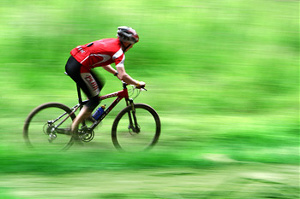
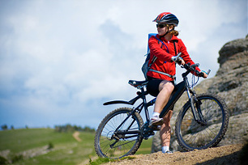
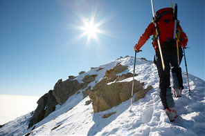

bIKES aNDORRA
tOUR DE fRANÇA
Ubicacions de ciclisme
tROBANS ALS DIFERENTS PUNTS D'INTERES DE LES PARROQUIES ALTES DEL PAIS.
-TARTER
-SISPONY
-PAS DE LA CASA
El diumenge 10 de juliol "Le Tour" té una nova cita amb Andorra, escenari de la 9a etapa de la ronda entre Vielha a la Vall d'Aran i la Coma d'Arcalís a Ordino. Serà la 1a arribada en muntanya de la 103.ª edició d'aquesta mítica prova (juntament amb el Mont Ventoux, el Finhaut-Emosson i Sant Gervais Mont Blanc).
El ciclisme a Andorra es viu molt intensament. 'El Principat compta amb 21 ports de muntanya! Per això, tant la Vuelta a Espanya com el Tour de França trien les nostres carreteres per organitzar les seves etapes reina, amb ports de totes les categories, incloses la 1a i la Especial.
Recorregut ANd
03/06/18
COLL d'ORDINO (1.987 m.) - ANDORRA LA VELLA. 070915
.
cerca de Andorra la Vella, Andorra la Vella (Andorra)
TrailRank: 81
05/06/18
Andorra la Vella - Puerto Comella - Puerto Arcalis
cerca de Andorra la Vella, Andorra la Vella (Andorra)
TrailRank: 59